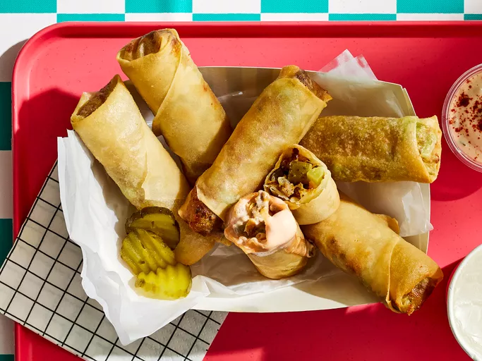

Back to Home
Cheeseburger Egg Rolls

Description
I had something similar at a restaurant, threw these together at home, and they were pretty good! As a dipping sauce, use mayo and catsup mixed together.
Ingredients
- 1 pound ground beef
- 1 onion, chopped
- 1 cup chopped dill pickles or sweet pickles
- 1 cup shredded Cheddar cheese
- 1 tablespoon prepared yellow mustard, or to taste
- 1 (16 ounce) package egg roll wrappers
- 1 cup vegetable oil for frying
Steps
-
Place the ground beef and onion in a skillet over medium heat, and cook and stir for about 10 minutes, breaking up the beef into crumbles as it cooks. Drain the meat and transfer to a bowl. Stir in the chopped pickles, shredded cheese, and mustard, and mix together well.
-
Line a baking sheet with parchment paper. Place a bowl of water next to your work surface. Remove an egg roll wrapper from the stack, and cover the remaining wrappers with a damp paper towel to prevent them from drying out.
-
Place the wrapper on the work surface with a corner facing towards you. Place about 1/4 cup of filling on the wrapper, and fold the top corner down over the filling. Tightly roll the wrapper into a cylinder, tucking in the corners as you roll, until the wrapper completely encloses the filling. Moisten the last corner with a little water, and finish wrapping so the moistened corner tightly seals to the egg roll, and there are no gaps to let the filling leak out. Place filled egg rolls on the parchment-lined baking sheet, covered with a slightly damp paper towel, while you finish making the egg rolls.
-
Heat the oil in a deep saucepan or deep fryer until a thermometer registers 365 degrees F (185 degrees C). Carefully place 2 or 3 egg rolls at a time into the hot oil, and fry for about 4 or 5 minutes, turning the egg rolls over once, until golden brown. Remove the egg rolls with a tongs, and drain on paper towels.